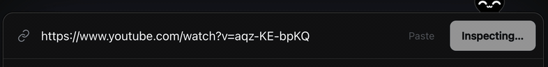
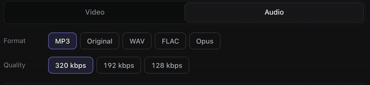
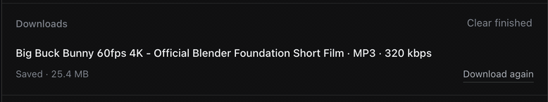

Save a link as
MP3 or MP4.
Paste a video link. Get the video or just the audio. No account needed.

How it works

Paste a link.
Copy a public video link and click Find media.

Pick your file.
Choose MP4 for video or MP3 for audio.

Hit Save.
Find the file in your browser’s Downloads.
Installation and supported links
Windows 10 or 11 (64-bit Intel or AMD): Open the installer and choose Finish. Mac (M1 or newer, macOS 14+): Open the ZIP and double-click Pawket. Both include the media tools.
On iPhone, add Pawket to your Home Screen to open direct MP3 and MP4 files. On desktop, public YouTube Shorts and Instagram Reels are supported. Some posts require login. DRM-protected videos and live streams are unsupported.
Other downloads · Windows install test · Developer guide